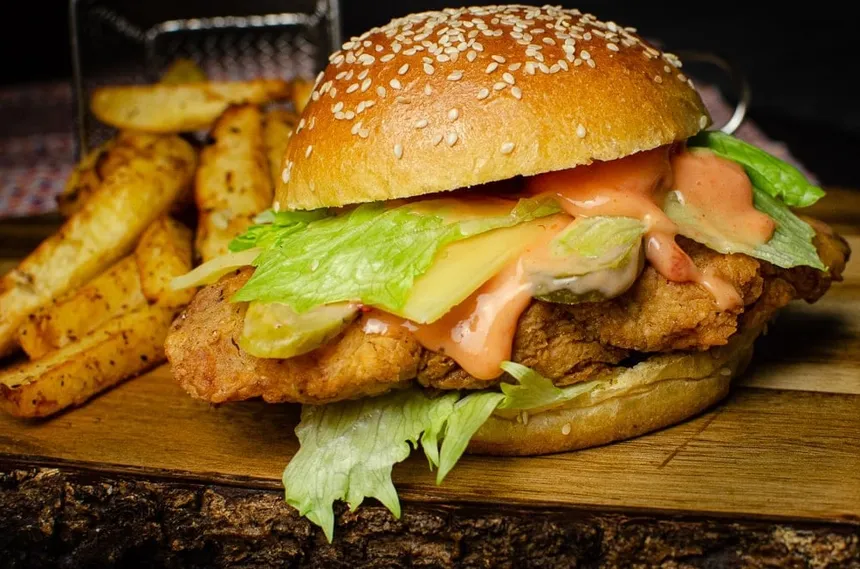

Chicken Burger

"Ready to turn up the heat on your burger game? Get ready for a fiery
feast with our mouthwatering Spicy Chicken Burger recipe that packs a
punch of flavor in every bite!"
Ingredients:
- 1 pound ground chicken
- 1/4 cup breadcrumbs
- 1/4 cup grated Parmesan cheese
- 1/4 cup finely chopped onion
- 2 cloves garlic, minced
- 1 teaspoon dried oregano
- 1 teaspoon dried basil
- Salt and pepper to taste
Directions:
-
In a mixing bowl, combine the ground chicken, breadcrumbs, Parmesan
cheese, chopped onion, minced garlic, dried oregano, dried basil, salt,
and pepper. Mix well until all ingredients are evenly distributed.
-
Divide the chicken mixture into equal portions and shape them into
patties of your desired size. Make sure they're slightly larger than the
diameter of your burger buns since they will shrink slightly during
cooking.
-
Heat a grill pan or a skillet over medium heat. Lightly grease the pan
with oil or non-stick cooking spray.
-
Once the pan is hot, add the chicken patties. Cook for about 4-5 minutes
on each side, or until the patties are cooked through and golden brown
on the outside. Make sure the internal temperature of the patties
reaches 165°F (75°C).
-
While the patties are cooking, you can toast the burger buns if desired
-
To assemble the burgers, place lettuce leaves on the bottom half of each
bun, followed by a chicken patty. Add tomato slices, onion slices,
cheese (if using), and your choice of condiments.
- Top with the other half of the bun and serve immediately.
- Enjoy your homemade chicken burgers!